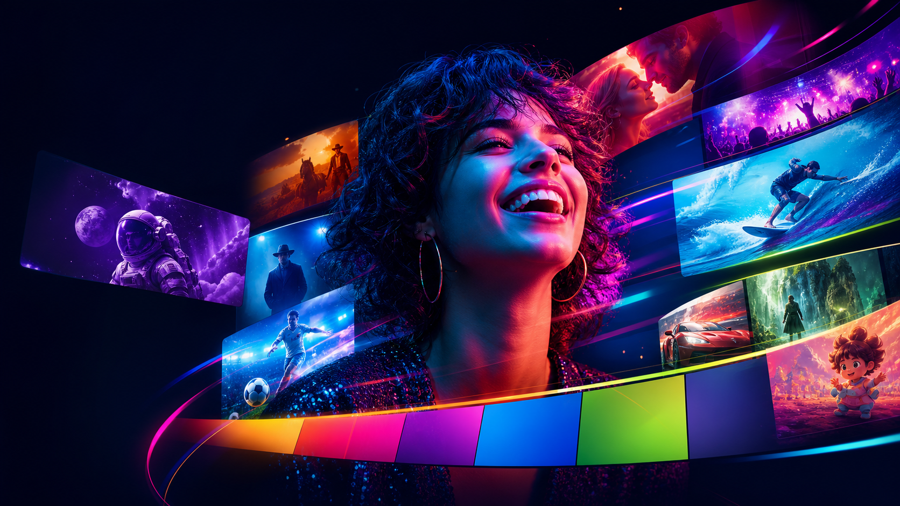
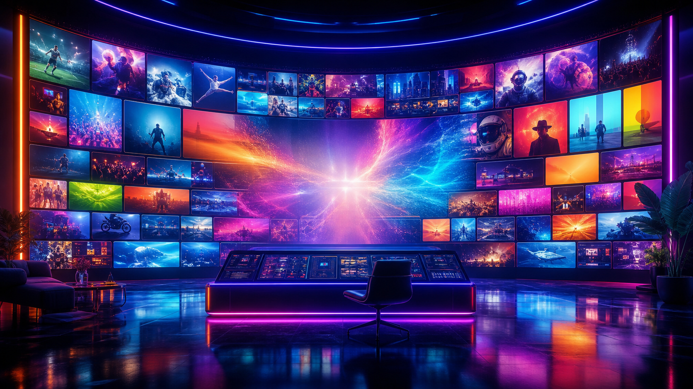
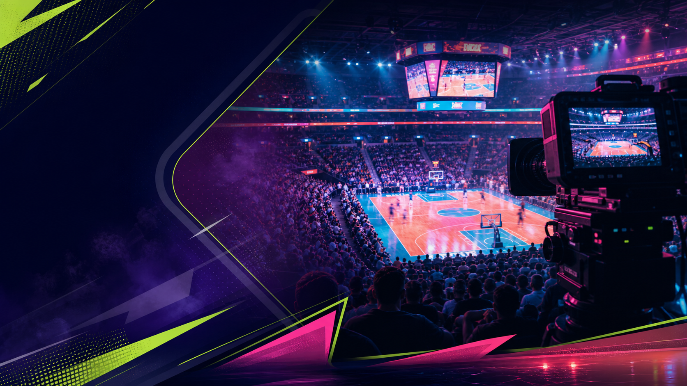

NUEVA FRECUENCIACH / 015MODELO 15 · CHROMATIC LIVE
Prendé la señal.
Subí el
color.
IPTV para cuando querés cambiar de canal sin cambiar de plan. Películas, series, deportes y la noche completa en movimiento.
+32K títulos4K en vivo24/7 señal

LIVE / 015 COLOR FEED · 00:15:24
AHORA EN VIVO
La señal que te encuentra
Selección editorial · Canal 04
↗
Sin pantalla aburrida
EN VIVOFÚTBOL INTERNACIONALCANAL 07AHORAESTRENO EN COLOR 24 HORASPELÍCULAS · SERIES · DEPORTES4K EN VIVOFÚTBOL INTERNACIONALCANAL 07AHORA
La grilla / 01
Cada color
tiene un canal.
Elegí por mood, por género o por esa sensación de “algo bueno está por empezar”. Chromatic Live hace que encontrar sea parte del plan.
Fuera de horario
Ver selección ↗La vida en loop
Ver selección ↗Señal abierta / 02
Lo que pasa
ahora mismo.
Saltá entre canales, armá tu noche y quedate donde la imagen se siente más viva.

Serie · 2 temporadas
Ciudad de nadie
Ver ahora ↗Documental · 78 min
El ruido del mundo
Ver ahora ↗Deslizá la señal
+32.000películas y series
+120canales en vivo
4Kimagen que explota
24/7sin horario fijo
Tu manera / 03
Mirar tiene
tu propio ritmo.
Una experiencia simple para elegir rápido, continuar donde dejaste y compartir la pantalla que todos quieren ver.
Ritmo
Menos búsqueda.
Más play.
Curaduría para llegar directo a lo que vale la noche.Continuidad
Una señal.
Cualquier pantalla.
Empezá en el living, seguí en el celu y no pierdas el hilo.Compañía
Mirar juntos,
sin discutir.
Perfiles para cada persona y una noche que se adapta a todos.Una señal / tus lugares
▣ Smart TV▯ Celular▤ Tablet⌘ Computadora◈ ChromecastActivación / 04
Tres pasos.
Todo encendido.
La señal llega lista. Vos elegís el tono y apretás play.
Escribinos
Contanos qué mirás y te recomendamos el plan que entra en tu casa.
Activamos
Recibís tu acceso listo para abrirlo en el dispositivo que ya usás.
Prendé la señal
Elegí una historia, un partido o un canal y dejá que pase.
Elegí tu intensidad / 05
Un plan para
cada mood.
Simple, claro y sin letra chica. Elegí la cantidad de pantallas y que empiece el color.
Para empezar
Base
$3.990 / mes
Una pantalla para tu rutina.
- 1 pantalla simultánea
- Catálogo completo
- Calidad Full HD
- Descargas incluidas
La más elegida
Color
$6.490 / mes
La noche completa, compartida.
- 2 pantallas simultáneas
- Catálogo completo
- Calidad 4K disponible
- Perfiles personalizados
Para todos
Full
$9.490 / mes
Una casa llena de historias.
- 4 pantallas simultáneas
- Catálogo completo
- Calidad 4K disponible
- Perfiles sin límite
Precios ilustrativos. Consultá disponibilidad y activación por WhatsApp.
Preguntas frecuentes / 06
Todo claro
antes del play.
¿Qué incluye Chromatic Live?+
Acceso a películas, series, deportes, canales en vivo y contenido para compartir en familia.
¿En qué dispositivos puedo usarlo?+
Smart TV, celular, tablet, computadora, Chromecast y los dispositivos que ya usás para mirar.
¿Puedo cancelar cuando quiera?+
Sí. Escribinos por WhatsApp y te ayudamos a gestionarlo cuando lo necesites.
¿Cómo empiezo?+
Elegí un plan, mandanos un mensaje y recibí tu acceso listo para entrar.
Tu próxima señal
Que no termine
el color.
Probá Chromatic Live y encontrá algo que te haga quedarte un rato más.
Probar ahora por WhatsApp